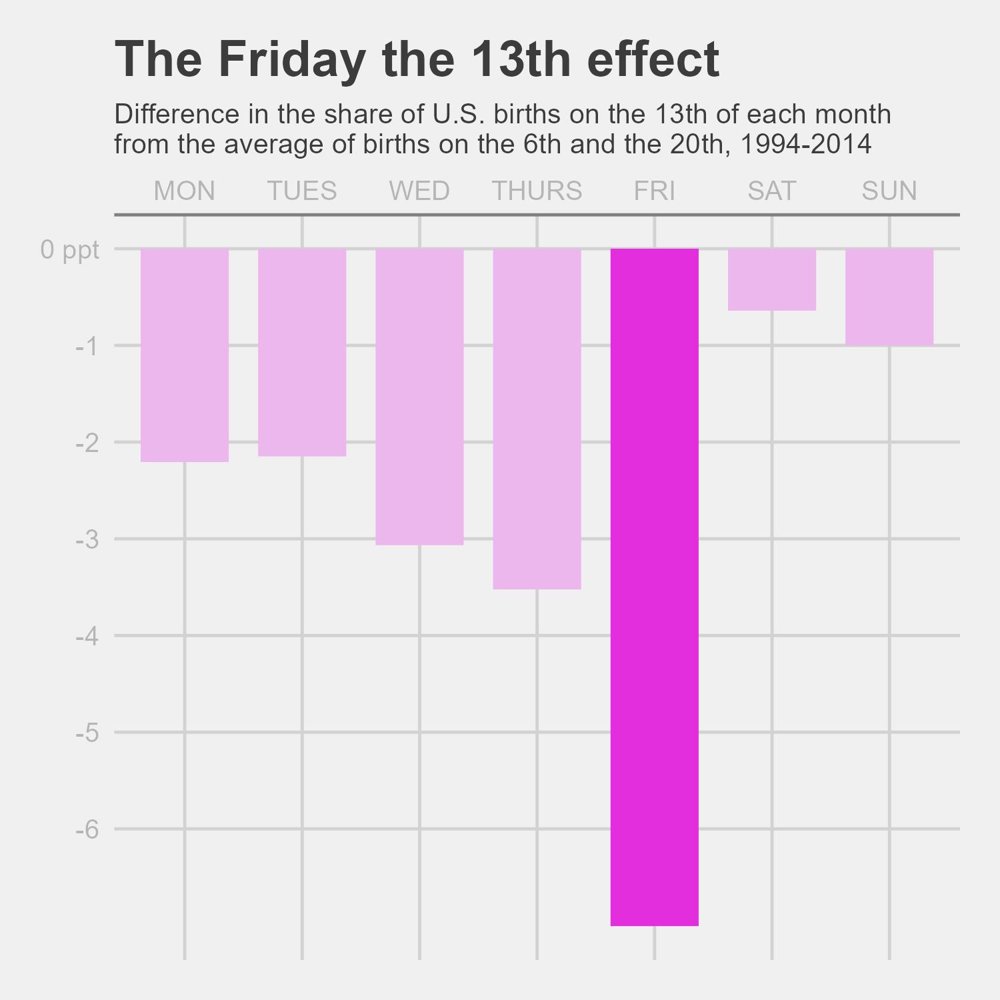

library(readr)
library(tidyverse)
library(ggthemes)Visualization Exercise
For this exercise, I will be attempting to recreate a plot from a FiveThirtyEight article using ggplot functions.
Data source and description
The data I will use is from the FiveThirtyEight article “Some People Are Too Superstitious To Have A Baby On Friday The 13th” and the associated GitHub repository. This article uses data from the National Center for Health Statistics (1994 - 2003) and the Social Security Administration (2000 - 2014). The two data files contain information on the year, month, date (as in number of the month), day of the week (1 represents Monday and 7 represents Sunday), and number of births for each date. For this exercise, I will be attempting to remake the first figure of the article shown below.
Data loading
I downloaded the data files and placed them into the data folder as births1 and births2. Using the read_delim() function, these data sets will be assigned as data1 and data2.
data1 <- read_delim(file = "data/births1.txt")
data2 <- read_delim(file = "data/births2.txt")#summary of datasets
summary(data1) year month date_of_month day_of_week births
Min. :1994 Min. : 1.000 Min. : 1.00 Min. :1 Min. : 6443
1st Qu.:1996 1st Qu.: 4.000 1st Qu.: 8.00 1st Qu.:2 1st Qu.: 8844
Median :1998 Median : 7.000 Median :16.00 Median :4 Median :11615
Mean :1998 Mean : 6.524 Mean :15.73 Mean :4 Mean :10877
3rd Qu.:2001 3rd Qu.:10.000 3rd Qu.:23.00 3rd Qu.:6 3rd Qu.:12274
Max. :2003 Max. :12.000 Max. :31.00 Max. :7 Max. :14540 summary(data2) year month date_of_month day_of_week births
Min. :2000 Min. : 1.000 Min. : 1.00 Min. :1 Min. : 5728
1st Qu.:2003 1st Qu.: 4.000 1st Qu.: 8.00 1st Qu.:2 1st Qu.: 8740
Median :2007 Median : 7.000 Median :16.00 Median :4 Median :12343
Mean :2007 Mean : 6.523 Mean :15.73 Mean :4 Mean :11350
3rd Qu.:2011 3rd Qu.:10.000 3rd Qu.:23.00 3rd Qu.:6 3rd Qu.:13082
Max. :2014 Max. :12.000 Max. :31.00 Max. :7 Max. :16081 #check number of rows to identify potential issues when joining
nrow(data1)[1] 3652nrow(data2)[1] 5479Looking at the summary of the datasets, data1 contains information for years 1994-2003, and data2 for years 2000-2014. The columns for month, date_of_month, and day_of_week match, and the second dataset has more observations compared to the first.
Join data sets from sources
The graph uses data from the years 1994-2014, so we need to join the datasets together to analyze. According to the footnote, the data of the overlapping years did not greatly differ. We can now join the two data sets with full_join(). We should use full join rather than other _join() options in order to preserve as much data as possible.
#join both data sets and assign to fulldata
fulldata <- full_join(data1, data2)Joining, by = c("year", "month", "date_of_month", "day_of_week", "births")#visual display of 10 random observations in fulldata set
slice_sample(fulldata, n = 10)# A tibble: 10 × 5
year month date_of_month day_of_week births
<dbl> <dbl> <dbl> <dbl> <dbl>
1 2006 2 28 2 13223
2 2006 12 11 1 12803
3 1994 3 21 1 11140
4 2002 4 4 4 12262
5 2006 10 23 1 12836
6 2006 11 24 5 9640
7 2002 4 15 1 11412
8 2009 6 13 6 8376
9 2013 5 29 3 13062
10 2012 9 1 6 8967#summary of dataset and check for joining issues
summary(fulldata) year month date_of_month day_of_week births
Min. :1994 Min. : 1.000 Min. : 1.00 Min. :1 Min. : 5728
1st Qu.:2000 1st Qu.: 4.000 1st Qu.: 8.00 1st Qu.:2 1st Qu.: 8787
Median :2003 Median : 7.000 Median :16.00 Median :4 Median :11998
Mean :2004 Mean : 6.523 Mean :15.73 Mean :4 Mean :11161
3rd Qu.:2008 3rd Qu.:10.000 3rd Qu.:23.00 3rd Qu.:6 3rd Qu.:12774
Max. :2014 Max. :12.000 Max. :31.00 Max. :7 Max. :16081 str(fulldata)spc_tbl_ [9,131 × 5] (S3: spec_tbl_df/tbl_df/tbl/data.frame)
$ year : num [1:9131] 1994 1994 1994 1994 1994 ...
$ month : num [1:9131] 1 1 1 1 1 1 1 1 1 1 ...
$ date_of_month: num [1:9131] 1 2 3 4 5 6 7 8 9 10 ...
$ day_of_week : num [1:9131] 6 7 1 2 3 4 5 6 7 1 ...
$ births : num [1:9131] 8096 7772 10142 11248 11053 ...
- attr(*, "spec")=
.. cols(
.. year = col_double(),
.. month = col_double(),
.. date_of_month = col_double(),
.. day_of_week = col_double(),
.. births = col_double()
.. )
- attr(*, "problems")=<externalptr> The fulldata set now contains information for 1994-2014 with 9131 observations. The columns are the same as the original two datasets.
Manipulate data
Now that we have the data for the full range of years, we need to manipulate the data to find the average number of births on the 6th or 20th of the month compared to the average number of of births on the 13th of the month. Since the graph is separated by weekday, we need to first group by weekday.
#assign to plot1data and create 3 new variables
plot1data <- fulldata %>% group_by(day_of_week) %>%
summarise(avg620 = mean(births[date_of_month == 6 | date_of_month == 20]), #average number of births on each weekday for the 6th or 20th of the month
avg13 = mean(births[date_of_month == 13])) %>% #the average number of births on each weekday for the 13th of the month
mutate(pctdiff = (avg13-avg620)/avg13 *100) #the percent difference for each weekday
#check the new data set
head(plot1data, 7)# A tibble: 7 × 4
day_of_week avg620 avg13 pctdiff
<dbl> <dbl> <dbl> <dbl>
1 1 11645. 11394. -2.21
2 2 12870. 12600. -2.15
3 3 12774. 12394. -3.07
4 4 12713. 12280. -3.52
5 5 12559. 11737. -7.01
6 6 8655. 8600. -0.641
7 7 7636. 7560. -1.00 I want to also recode the day_of_week column into days rather than numbers for the graph labeling. To preserve the weekday order, I will need to change the variable into a factor using mutate() and factor() functions.
#recode days of the week for plot labels and factor to keep days ordered for graph
plot1data<- plot1data %>%
mutate(day_of_week = case_when(
day_of_week %in% 1 ~ "MON",
day_of_week %in% 2 ~ "TUES",
day_of_week %in% 3 ~ "WED",
day_of_week %in% 4 ~ "THURS",
day_of_week %in% 5 ~ "FRI",
day_of_week %in% 6 ~ "SAT",
day_of_week %in% 7 ~ "SUN")) %>%
mutate(day_of_week = factor(day_of_week,
levels = c("MON", "TUES", "WED", "THURS", "FRI", "SAT", "SUN")))
#check new dataset
head(plot1data, 7)# A tibble: 7 × 4
day_of_week avg620 avg13 pctdiff
<fct> <dbl> <dbl> <dbl>
1 MON 11645. 11394. -2.21
2 TUES 12870. 12600. -2.15
3 WED 12774. 12394. -3.07
4 THURS 12713. 12280. -3.52
5 FRI 12559. 11737. -7.01
6 SAT 8655. 8600. -0.641
7 SUN 7636. 7560. -1.00 The new dataframe plot1data has a summary of the average number of births on the 6th or 20th and the average number of births on the 13th as well as the percent difference for each weekday. Notice that we needed to use the summarise() rather than the mutate() function to create the new variables. The summarise() function returns one row for a group of observations after a group_by() statement while mutate() returns the same number of rows as the original dataset.
Plot graph
Using the plot1data, we can attempt to recreate the graph using the ggplot() and associated functions. The geom_col() function will be the basis of the graph, and the theme(), labs(), scale_x_discrete(), scale_y_continuous() , and scale_fill_manual() functions all adjusted the graph elements to look like the original graph (or at least as close as I can get to it!).
Note: Because I did not remove data for the national holidays that fall on either the 6th or 20th between 1994 to 2014, my graph data may not match the article’s exactly, but the trends are still present.
#set up standard plot
ggplot(plot1data)+
geom_col(aes(x = day_of_week, y = pctdiff, fill = day_of_week), width = 0.75)+
theme_fivethirtyeight()+ #theme from article database
#add labeling
labs(title = "The Friday the 13th effect",
subtitle = "Difference in the share of U.S. births on the 13th of each month\nfrom the average of births on the 6th and the 20th, 1994-2014",
y = "ppt", x = NULL)+ # add title, subtitle, y axis title and remove x axis
#add axis elements and bar colors
scale_x_discrete(position = "top")+ #move x axis to top of graph,
scale_y_continuous(breaks = c(0,-1,-2,-3,-4,-5,-6), labels = c("0 ppt", "-1","-2","-3","-4","-5","-6"))+ #define y axis tick marks and labels
scale_fill_manual(values =
c("#EBB7EC", "#EBB7EC", "#EBB7EC", "#EBB7EC",
"#E22EDD", "#EBB7EC", "#EBB7EC"))+ #bar colors
#Adjust theme to match graph aesthetics
theme(panel.grid = element_line(colour = "#E0E0E0"), #light grey for grid lines
panel.background = element_rect(fill = "#F0F0F0"), #light grey for panel background
plot.background = element_rect(fill = "#F0F0F0" ), #light grey for graph background
axis.line.x = element_line(color = "#808080"), # black for x axis
axis.text = element_text(color = "#b5b5b5"), #grey color of axis labels
plot.title = element_text(face = "bold"), # bold title
plot.subtitle = element_text(size = 10), #change size of subtitle
legend.position = "none", # remove legend
axis.title.y = NULL) #remove y axis labelggsave("remadegraph.png", width = 5, height = 5)
After adjusting the height and width of the final graph, the remade plot is pretty close to the original graph. The biggest differences that I could not code for is the font and removal of holidays.
Troubles/Issues
When I was trying to recreate the graph, there was a lot of googling to figure out all the theme elements to adjust (particularly with this website), but my main issue was trying to get the correct data for percent change needed for the y axis. Google did not have that answer I was looking for since many of the solutions involved something along the line of y = (..count..)/sum(..count..) in ggplot. Eventually, I figured out how to manually code it correctly after determining exactly what was being compared on the graph. My notes from the Introduction to R class that I took last semester were very helpful for manually coding plot1data.